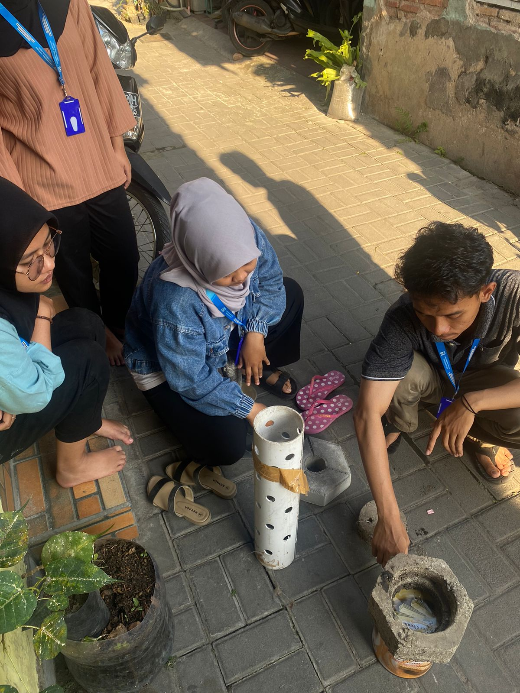
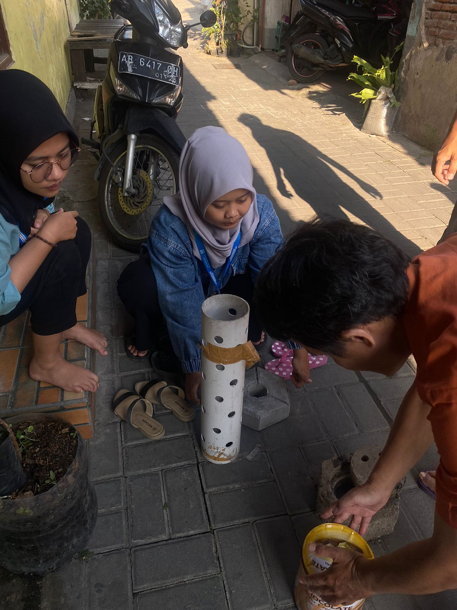
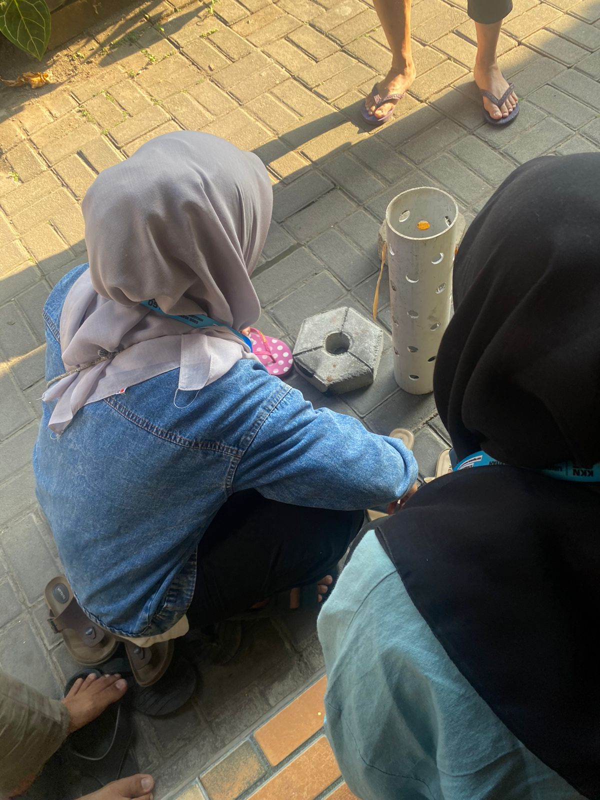

Koordinasi Program Kerja Biopori dengan Bapak Sanuri
PANDEYAN, KEC. UMBULHARJO, KOTA YOGYAKARTA, DIY
KKN 05 UNISA Yogyakarta, melaksanakan rapat bersama bapak sanuri untuk dilakukan biopori. Biopori adalah lubang resapan yang dibuat menggunakan wadah berupa ember cat atau bisa menggunakan pralon yang telah di beri lubang di sisinya. Biopori ini bermanfaat untuk mengurangi sampah organic rumah tangga ke TPA (Tempat Pembuangan Akhir) selain mengurangi sampah organic, Biopori bermanfaat juga untuk dapat memilah dantara sampah organic dan anorganik. Lokasi pembuatan biopori dilakukan di RW 06, pembuatan biopori dilakukan pada area terbuka yang akan terkena air hujan yang dibuat dihalaman rumah dan sekitar pepohonan. Kemudian Annas Abdulloh mengatakan jika biopori ini akan dilaksanakan dan segera dibuat pada tanggal 2 september 2023 di RW 06 dan mahasiswa KKN UNISA Yogyakarta akan menyerahkan dan meletakkan biopori tersebut. Semoga Masyarakat dapat melanjutkan untuk membuat biopori mandiri.
DOKUMENTASI
  